西瓜的悖论——1960年
酒店里的许多客人都在共享一个大西瓜，这个西瓜净重10千克，里面包含着90%的水分。在西瓜运到酒店之前，它所含的水分就从原先的90%降到了现在的80%。
你能计算出这个西瓜在到达餐桌，让客人大饱口福的时候，它的重量是多少吗？
连续的西瓜
七个大西瓜的重量（以千克为单位）是7个连续奇数，并且这七个西瓜的平均重量是7千克。
请问，最重的那个西瓜是多少千克呢？
弗雷德金的元胞自动机——1960年
爱德华·弗雷德金（1934—）是卡内基-梅隆大学的一名教授，同时也是麻省理工学院的客座教授，他是数字物理学方面的先驱之一。他的重要贡献就包括元胞自动机，这是他在20世纪60年代发明的最早与最简单的自我复制系统。在这个二进制系统里，每一个元胞都有两种可能的状态：生或是死。弗雷德金认为，有关一切万物的终极理论是可以计算的，而整个宇宙就是一台电脑。
五个具有生命的元胞（红色正方形）的原始图形及其相邻的部分，将根据下面的简单原则，世代转换。
一个元胞的命运取决于其四邻元胞的数量（既可以水平相邻，也可以垂直相邻）。
1.如果相邻元胞的数量是偶数，那么这个元胞下一代就会处于死的状态（白色的部分）。
2.如果相邻元胞的数量是奇数的话，那么这个元胞下一代就会处于活的状态（红色的部分）。
认真观察下面五代的变化，结果让人惊讶：第一代中具有生命的五个元胞的原始组合结构，经过五代，生成了四组完全相同的副本。
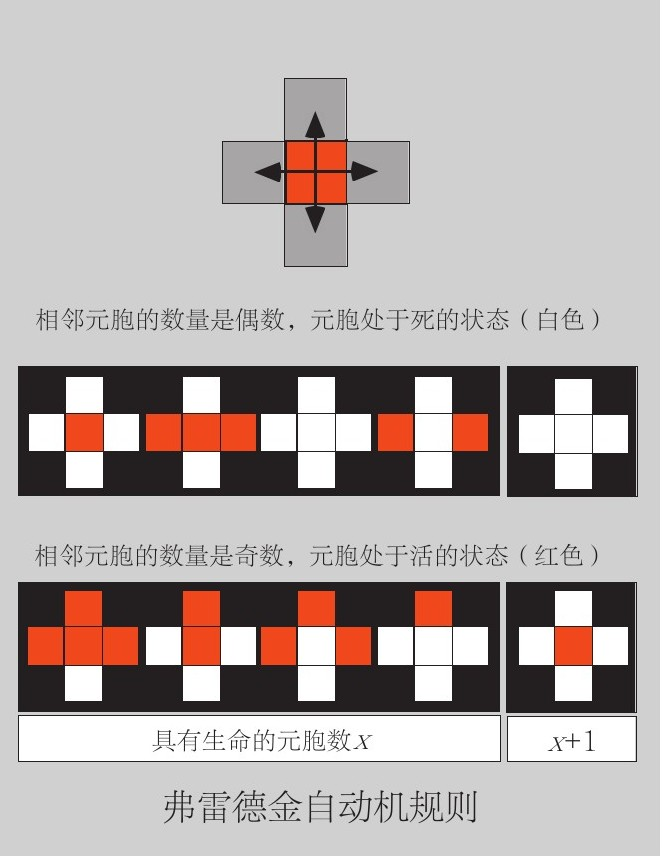
康威自动机的规则
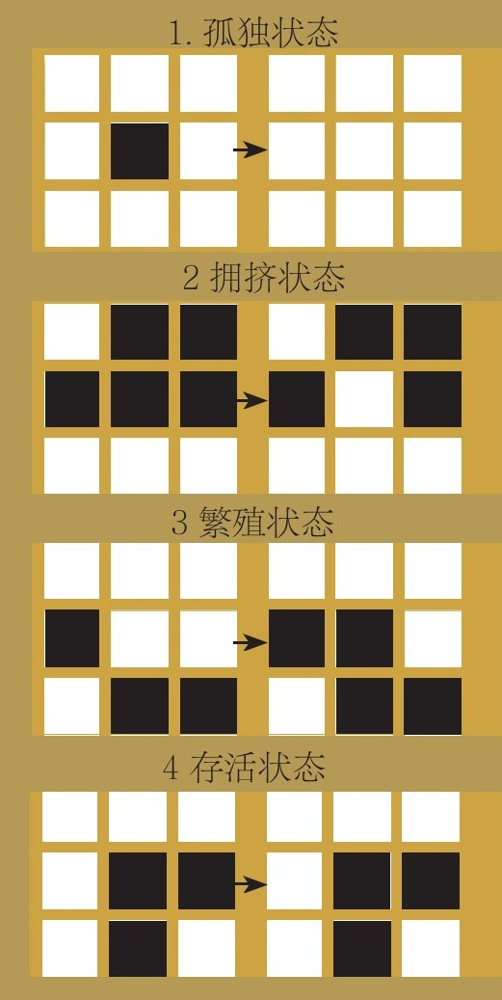
康威生命游戏
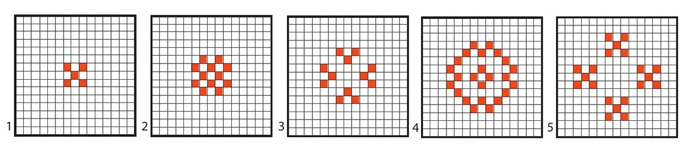
生命游戏是英国数学家约翰·霍尔顿·康威于1970年发明的一种元胞自动机。生命游戏不是竞技游戏，你一个人就可以玩。你不会赢，也不会输。其设计的初衷仅仅是为了创造一个原始结构，看它如何成长。
生命游戏的宇宙就是一个无限的二维正交方块阵列网格，每一个网格都处于两种的可能状态，非生即死。每一个元胞都与其在水平方向、垂直方向以及对角线方向相邻的八个元胞进行互动。每按步骤互动一次，下面的变化就会出现：
1.孤独状态：一个少于两个相邻元胞的元胞会死去。
2.拥挤状态：一个元胞有超过三个相邻的具有生命的元胞，就会死去。
3.繁殖状态：一个有三个相邻元胞的空元胞，就会诞生一个元胞。
4.存活状态：一个元胞拥有两个或三个相邻元胞的话，它会保持不变。
弯扭折纸游戏
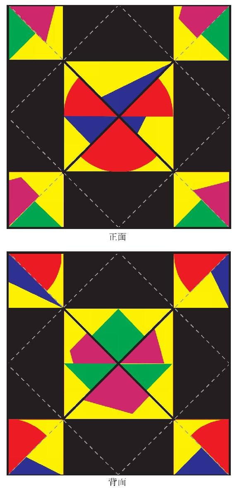
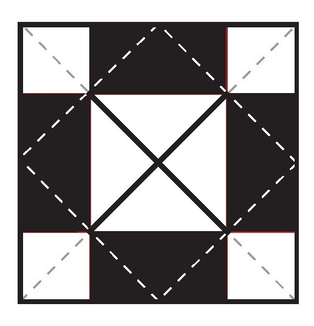
弯扭折纸游戏是获得专利的原创折纸游戏。复制两边都印有图案的正方形，沿着虚线折叠，然后沿着中间黄色正方形的两条对角线剪下去。接着，沿着虚线折叠正方形，创造出一个如图所示的带有图案的，只有原来正方形一半大的正方形。
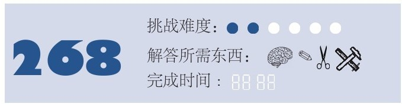
折纸
很多有趣的谜题与拓扑学上的发现只需通过对一张方形纸的折叠就可以表现出来。无论对孩子还是对成年人来说，这些方法都是对平面几何的一种很好的介绍。古代流传下来的折纸就是很好的例子。
所谓的折纸，就是将一张纸折叠成多个面的结构。亚当·沃尔什就将其定义为拥有两个或两个以上面的平面纸张。
在20世纪50年代，马丁·加德纳将折纸推广开来。受其影响，我对折纸很着迷，发明了两个原创折纸游戏。其中一个就是弯扭（Flexi-Twist），这是我给自己强加的一个用于创造全新折纸结构的挑战任务，如古典折纸要求的一样，不能事先折叠和粘贴，但依然保留了多个让人印象深刻的面与具有挑战性的折痕。
另一个折纸游戏是“伊凡的铰链”，这是全新类型的琴式铰链中第一个获得专利的折纸游戏，折叠游戏与结构的世界级权威格雷格·弗雷德里克森在他那本激动人心的著作《琴式铰链剖分》里将这个折纸游戏命名为“伊凡的铰链”。
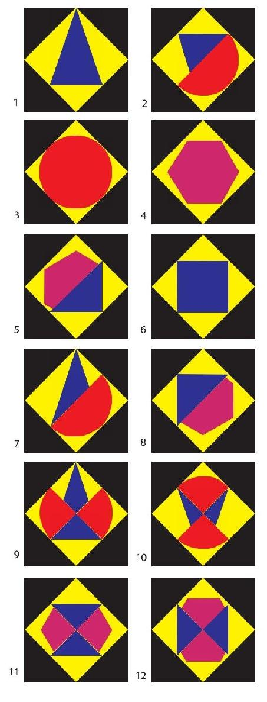
夜间过桥
这座桥将在17分钟后准时倒塌。四位步行者必须在黑暗中走过这座桥。他们只有一个手电筒，这个手电筒是每次过桥时都需要的。
一次最多只能有两人带着手电筒过桥，每次过桥之后，必须有一人将手电筒带回来。每一位步行者都以不同的速度过桥：第一位过桥需要1分钟，第二位需要2分钟，第三位需要5分钟，第四位需要10分钟。因此，每两人一起过桥的时间都以速度最慢的那个人为准（比方说，第一个过桥者与第三个过桥者一起过桥，那么他们过桥的时间将是5分钟）。这个过程中不允许耍任何花样，不可以将手电筒扔回来，也不能背着人过桥。这个问题只有两种解答的方法，你能够找到这两种解答方法吗？
弗兰克·厄德斯的螺旋侧面——1962年
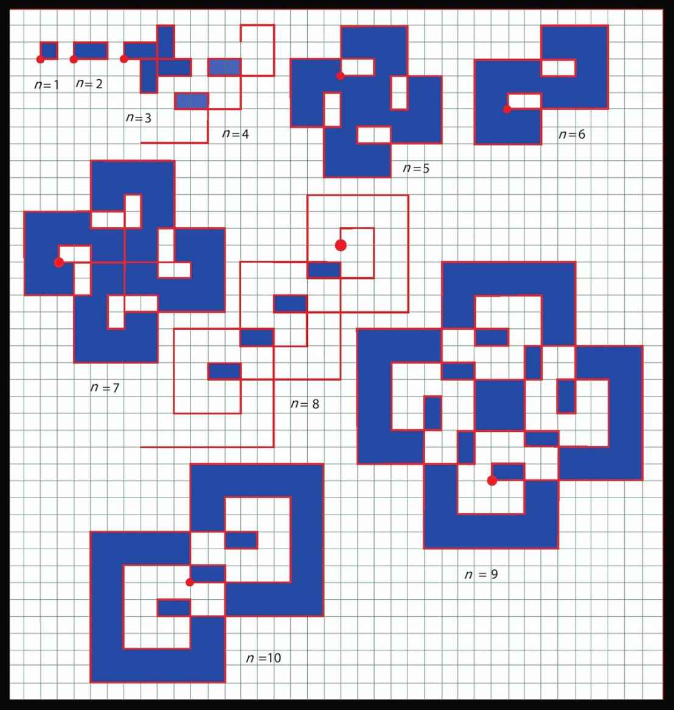
阿伯丁大学医学研究院的微生物学家弗兰克·奥德教授在1962年提出了螺旋侧面的概念，据说，当时他正在上一堂“并不是很有趣的高中化学课”，这是他在一张图形纸上胡乱涂鸦之后发现的。他提出了一个能够衍生出充满惊喜的具有美感的模式的简单法则，他将之称为螺旋侧面。
从一个非常简单的衍生过程中，我们可以看到螺旋侧面的生成基于这样的思想：将几何图形定义为通过一个运动的点形成的路线图。奥德教授将螺旋侧面视为一只蠕虫依据下面的法则行进时形成的路线。
蠕虫移动1个单位后右转90°，移动2个单位后再右转90°，再移动3个单位，然后再右转90°，依此类推，直到到达某一个特定的极限“n”。这就形成了一个螺旋侧面的纵横格，接着重复这样的过程。
在一个正方形网格的纸上，你可以非常轻松地用纸与笔去玩这个螺旋侧面的游戏。
上图已经给出了前10个螺旋侧面。当n=11以及n=13时，你能继续给出这两个阶数更高的螺旋侧面吗？
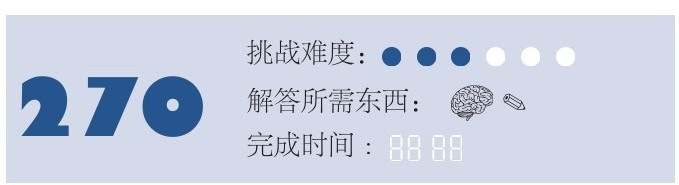
质数螺旋——1963年
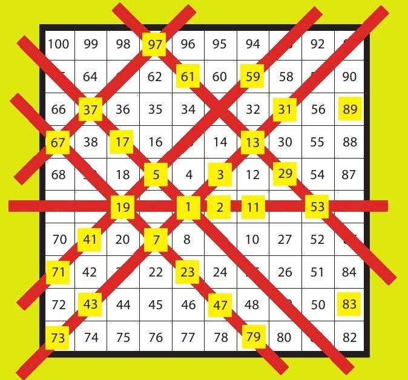
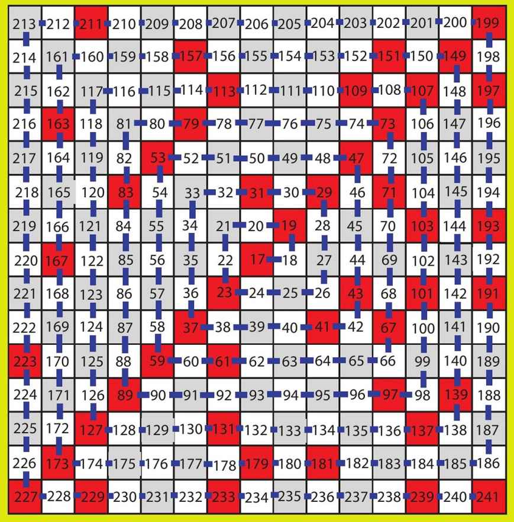
1963年，著名的波兰数学家斯塔尼斯拉夫·乌拉姆（Stanislaw Ulam）听一次无聊的演说时，在一张纸上漫无目的地写着数字。他在一个正方矩阵里草草地写下了一些连续的数字：首先在中间位置写下1，然后按照下图所示的方式，一系列数字以螺旋的方式在网格里呈现了出来。
让他感到无比震惊的是，质数基本上都落在对角线与直线上。
在他的矩阵里，前面26个质数都落到了直线上，每条直线上至少包括3个质数，而一些对角线则包含着更多的质数。同样神秘的线段模式还出现在更大的矩阵上，数以百万计的质数呈螺旋状分布，形成了与此相似的图形。
这是自然的法则还是一种偶然呢？到目前为止，人们还没有弄清楚。
乌拉姆还研究了起点不是1的整数矩阵的螺旋，如左边的这个矩阵，它是从中间的数字17开始的。他惊讶地发现，在这种螺旋图形里，质数呈现出一种奇怪的分布模式。你可以尝试一下。
地图与邮票折叠——1963年
折叠邮票是一般的地图折叠问题的特殊情况。在你展开一张大地图，试图重新将其折叠成原先的形状时，你可能会遇到一些困难。波兰数学家斯塔尼斯拉夫·乌拉姆是第一个提出以下问题的人：可以用多少种不同的方法去折叠一张地图呢？
从那时起，这个问题就一直让当代研究组合理论的研究人员感到头疼。事实上，关于折叠地图的一般性问题至今仍未得到解答。
有一句古语放在这里也是适合的：“重新折叠一张地图的最简单方法，就是用不同的方法去进行折叠。”[此书分享微信wsyy5437]
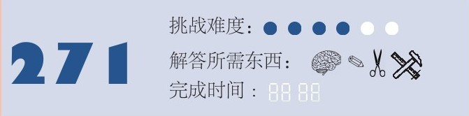
折叠三枚连成一条的邮票
折叠三枚连成一条的邮票，有多少种方法？你可能只能沿着齿孔进行折叠，而这三枚邮票最终的折叠结果就是彼此重叠在一起。这些邮票是正面朝上还是背面朝上，这些都不是我们需要考虑的问题。正如我们之前所了解的，三种颜色的邮票有六种不同的组合方式（也就是3×2×1）。通过折叠你能够得到多少种不同的结果呢？此时，我们应该注意到，折叠邮票的问题有下面几种不同的可能性。
1.无铭记的（U）——对于无铭记的邮票，在不需要考虑邮票方向的情况下，沿齿孔处折叠是唯一一种可能的折叠方式。
2.有铭记的（N）——如果邮票贴上了标签，那么就需要考虑它们的方向。
3.对称性（S）——对称性的折叠。
在这三种不同的情况下，你能找到多少种不同的折叠方法呢？
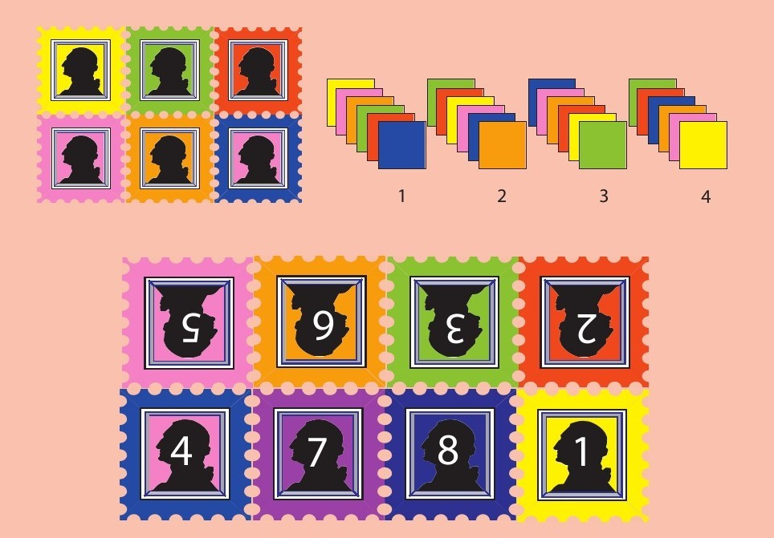
折叠四枚连成一条的邮票
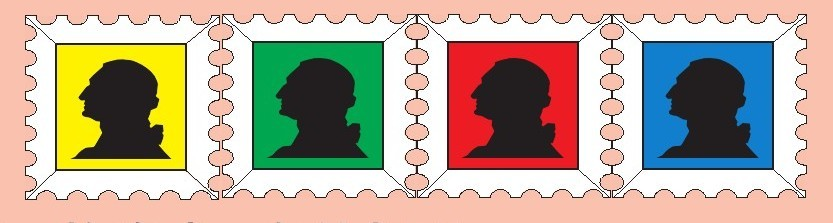
折叠四枚连成一条的邮票有多少种方法？你可能只是沿着齿孔去进行折叠，那么最终的折叠结果肯定是四枚邮票彼此重叠。这些邮票是正面朝上还是背面朝上都是不需要考虑的。
折叠一个四枚邮票组成的正方形
折叠一个四枚邮票组成的正方形有多少种方法呢？你可能只是沿着齿孔去进行折叠，那么最终的折叠结果必然是四枚邮票重叠在一起。这些邮票是正面朝上还是背面朝上都是不需要考虑的。正如我们之前所看到的，四种颜色的邮票一共有24种不同的组合方法（也就是4×3×2×1）。你能想出多少种不同的折叠方法呢？
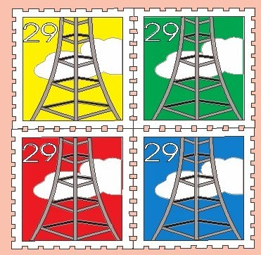
折叠一个六枚邮票组成的长方形
六枚邮票组成的一个2×3的长方形，我们可以沿着齿孔，想出多种不同的折叠方式。如图所示，我们已经按照颜色的序列给出了四种不同的折叠方法。你能想出哪一种折叠方法是不可能的吗？在最终的折叠结果里，邮票是正面朝上还是背面朝上，都是不需要考虑的。
折叠一个八枚邮票组成的长方形
你能将八枚邮票沿着齿孔折叠，使这些邮票按从1到8的顺序重叠在一起吗？
在棋盘上滚动骰子——1963年
1963年，马丁·加德纳提出了在不同大小的棋盘上掷骰子的问题。
骰子的尺寸与棋盘的单元格大小是一样的，而骰子是通过向相邻的正方格滚动来实现移动的，每滚动一次，都会出现不同的点数。
滚动骰子（一）
如图所示，从给出的位置开始滚动骰子，滚动6次，每次都滚出不同的点数，最终让它停在左下角的正方格时6点朝上，该如何滚动？
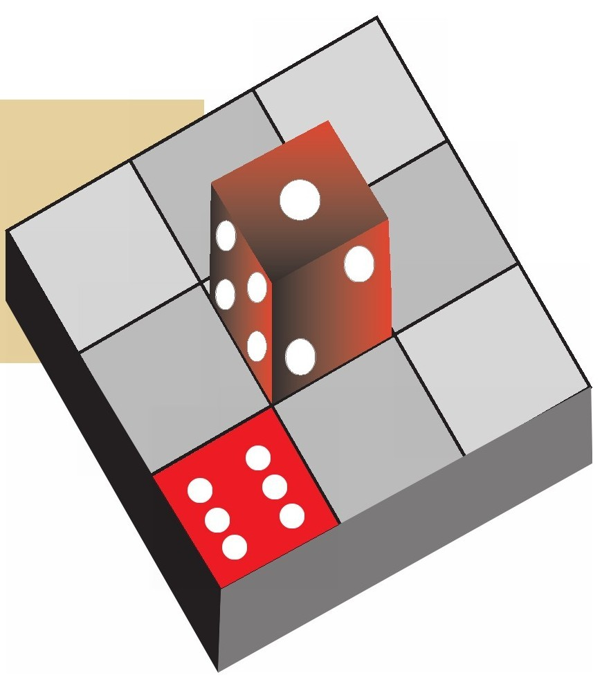
滚动骰子（二）
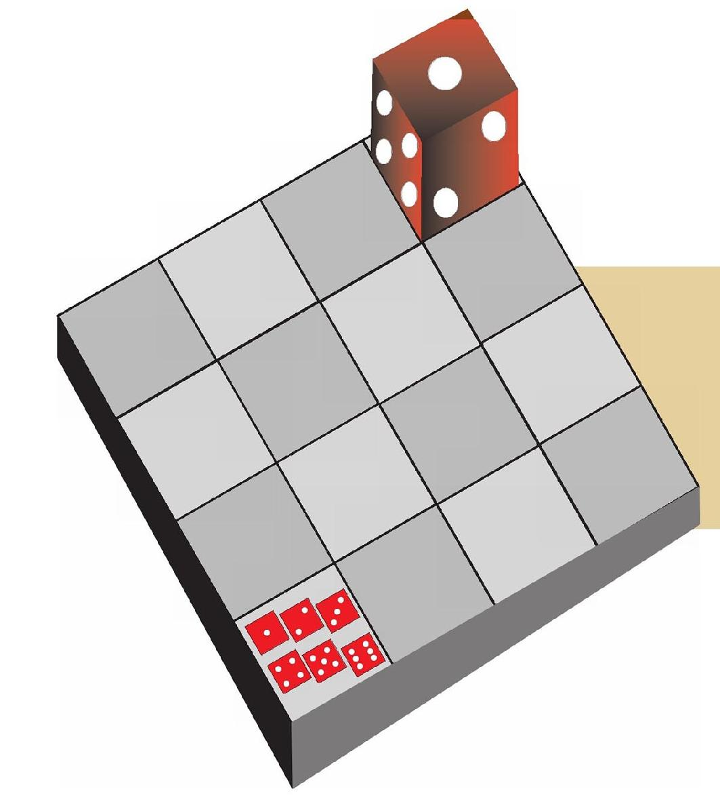
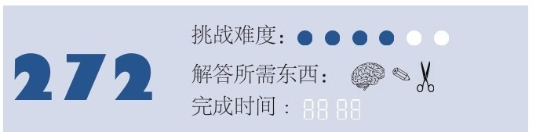
从顶部的正方格开始滚动骰子，每次滚动一面，最终，骰子要滚到左下角的正方格里。连续滚动骰子6遍后，让左下角正方格里的点数按从1到6的顺序排列。你能做到吗？
巴克敏斯特·富勒（Buckminster Fuller，1895—1983）
巴克敏斯特·富勒被他的朋友们称为“巴克”，他是20世纪重要的创新者之一，他的发明数量达到了让人震惊的程度。他成功地设计了圆顶建筑、最大限度利用能量的住宅、“巴克球”以及其他诸多发明。
他认为协同配合是交互式系统的基本原则，提出了一种被称为“协同学：思维的几何学探索”的重大课题。他称自己为“B号试验品”，表明自己的人生就是一场试验。他通过制作模型与搭建蓝图展示自己的设计理念与思想，将他“以复杂换精简”的设计哲学用符号表现，用以解释协同配合的原则。
我与富勒见过两次面。第一次是在20世纪60年代左右参加他在以色列特拉维夫举办的讲座。在他演说结束后的提问环节里，我向他展示了我新发明的米勒卡尔的第一款原型。这是受到他的思想启发而制作出来的一种全新模式的镜子万花筒。一旦解谜成功，万花筒最终就会呈现出富勒的肖像。他非常愉快地接受了我设计的万花筒，并且与我交流了几句，说他非常喜欢我的这个有趣的游戏，这让我感到很高兴。
另外一次就是在20年后的纽约，当时我正在爱迪生酒店等电梯。此时，电梯门打开了，我直接撞上了那位刚走出电梯的先生。我们俩当时都感到有点疼痛，当我俩恢复过来时，我发现撞到的就是富勒先生。当他见到我的时候，就大声地喊道：“哎呀，你不就是那个发明万花筒的人吗？”可见，他也是一眼就认出了我。
富勒邀请我喝咖啡，我与他度过了人生中最愉悦的一段时光。他在喝咖啡的两小时里所展现出来的魅力我将永生难忘。
——巴克敏斯特·富勒
富勒的协同作用——1964年
协同作用是指两件或两件以上的事情同时作用，从而产生一种无法独立获得的结果。协同作用一词的提出很大程度上要归功于富勒，他的许多研究工作都涉及探索与创造协同作用。
富勒非常擅长通过创造模型去证明自己的观点。他的骨架四面体就以非常具有美感的方式展现了他协同作用的思想。两根弯曲的钢丝形成的三角形可以用某种完美的方式构建出一个完美的四面体模型，这是一个由四个三角形组成的三维图形。因此，1加1似乎能够等于4。
梅尔·斯托弗是富勒的朋友，他本身也是一位著名的魔术师。他利用富勒发明的钢丝三角形创造出了一个近景魔术。梅尔向他的观众展示了用钢丝制成的有四个面的四面体，然后举起这个四面体，让离他最近的人用两个钢丝三角形（没有弯曲）重新创造出一个四面体。当然，谁也没有办法成功地做到。梅尔的巧妙之处就在于他在举起由两个由钢丝做成的弯曲三角形时，将这些弯曲的钢丝弄直了，使之变成了两个平面的三角形。
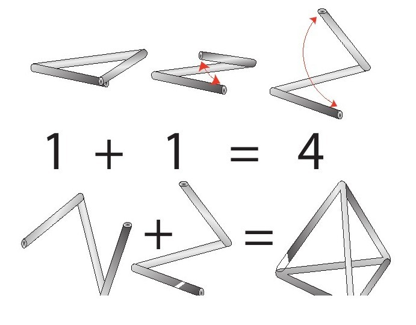
富勒的协同学——1964年
维姆·富勒在其著作《太阳与能量间的协同学》一书里提到，协同学是对转变中的系统进行的实验研究，重点强调整个系统的运行情况，光凭每个单独部件的行为无法对其进行预测，其中也包括人类作为参与者与观察者所扮演的角色。
人类作为系统的一个组成部分，既可以识别小到微观量子、大到宏观宇宙的系统，又可以清楚地表达它们的行为方式。这使得协同学成为一门非常宽泛的学科，囊括了许多科学与哲学层面上的研究，其中就包括四面体与紧密堆积球体几何学。
巴克敏斯特·富勒发明了协同学这个术语，并试图用两卷本的著作来界定其范围。然而，协同学依然是一个非常规的，甚至有点激进的研究课题，未能获得主流科学界的支持。绝大多数传统院校对此都很少理会。
富勒的工作激励着许多研究人员投入协同学的研究当中。赫尔曼·哈肯对开放系统具有的自组织结构展开了研究；艾米·埃蒙德森对四面体与二十面体进行了几何学的研究；斯坦福·比尔研究了社会动力学范围内的测地线问题。
直到现在，还有许多研究人员仍然不懈地进行着协同学方面的研究，尽管他们都有意识地与富勒当年提出的包罗万象的定义保持一定的距离。
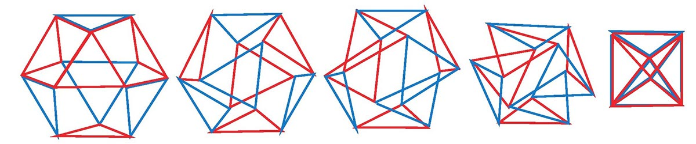
巴克敏斯特·富勒的吉特巴舞系统
巴克敏斯特·富勒的吉特巴舞系统是最具美感的多面变形之一。在半正则的阿基米德多面体里，我们已经谈到了立方体，富勒将之称为“矢量平衡”。吉特巴舞系统是富勒对在四个显著位置连续变形的系统的一种称呼，它会从立方八面体依次变形为八面体、二十面体、十二面体（反之亦然）。
富勒运用棍子与具有柔韧性的橡胶顶点成功地做出了这样的可变形系统。吉特巴舞系统的运动能让富勒将立方八面体变成八面体，而相反的步骤则是将八面体变成立方八面体。
要是没看到这个系统运转的慢动作，就很难理解吉特巴舞这一系统所具有的美感。当你制造出这样的模型时，就能有这样的感受。右图的照片就是在1991年瑞士苏黎世举办的欧利卡展览会上展出的吉特巴舞系统模型。吉特巴舞系统有八个三角形的面，当这些面转动时，它们就会迅速沿着四个旋转的轴心向内收缩或向外扩张。
现在市面上有许多以吉特巴舞系统为原型的玩具与游戏，多数是用纸、钢铁或塑胶做成的，最近还新出了一款用磁石做成的玩具。
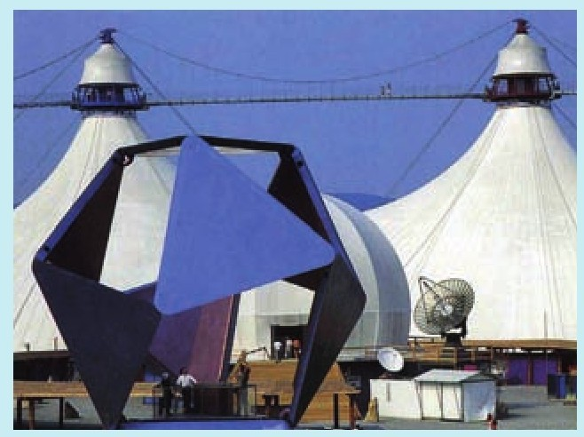
瑞士苏黎世举办的欧利卡展览会上展出的吉特巴舞系统模型
滚动的肖像立方体——1964年
滚动立方体游戏是在1971年出版的《趣味数学》一书中由杜登尼首先提出来的。后来，经过马丁・加德纳和约翰・哈里斯的大力推广而大受欢迎。这种立方体有六个面，每个面上都有一位著名人物的头像。将这种立方体在一个棋盘上滚动，游戏规则与玩法如下：
游戏一：首先将爱因斯坦头像面朝上放在棋盘左下角的方格里。游戏规则是：让这个立方体从一个格翻滚到另外一个格，直到遍历棋盘的每个方格，最终停留在棋盘右下角，并且爱因斯坦头像依然是正面朝上的（当然，不一定非得选择爱因斯坦头像，也可以选别的人物头像）。这听上去可能很简单，但爱因斯坦头像除了在起点和终点面朝上外，在整个“旅程”中绝对不能面朝上。
游戏二：将爱因斯坦头像放在棋盘第二排的第四个方格，以此作为起点，遍历棋盘的每个方格，最后再回到起点位置，形成一个封闭的回路。在此期间不能让斯大林头像正面朝上。你能做到吗？
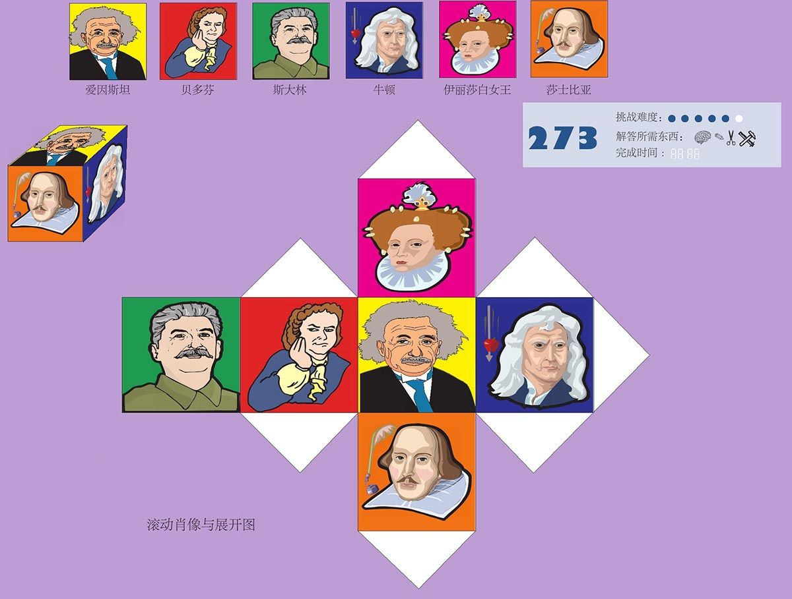
可变的肖像立方体
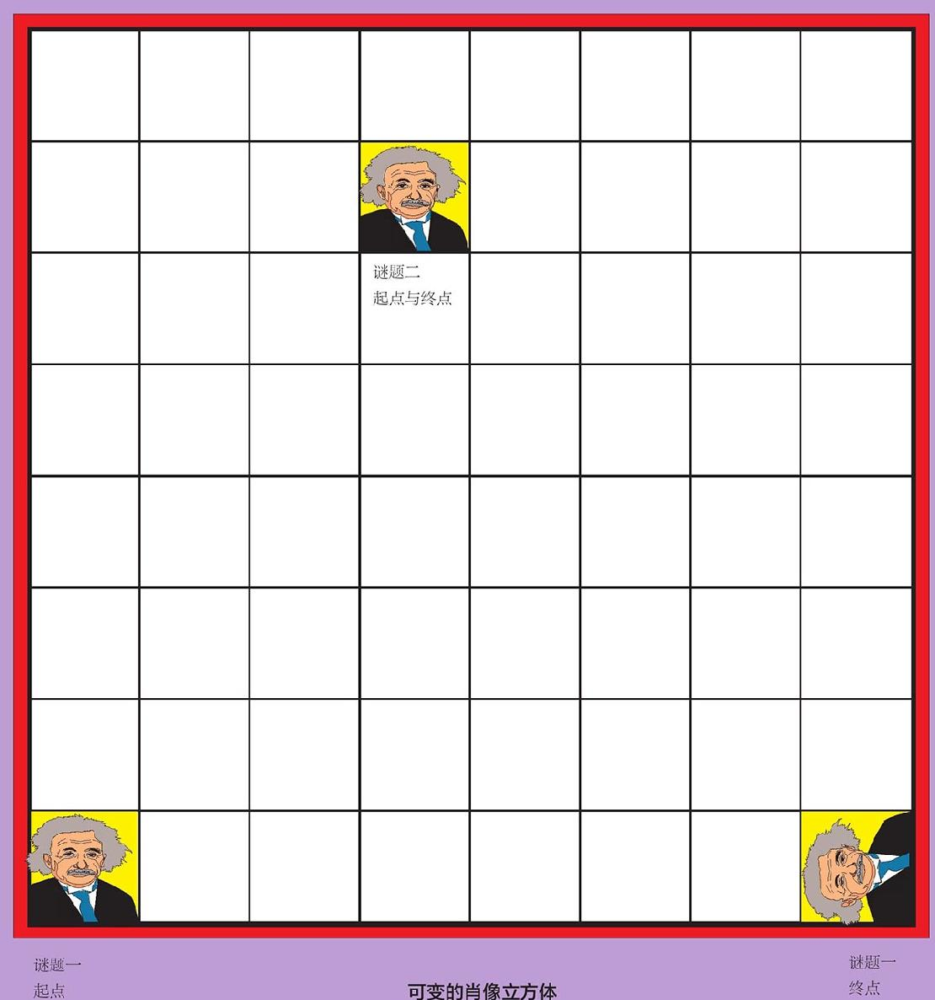
谜题一与谜题二的棋盘游戏
不动点定理——1964年
如图所示，将一张图片放在另一张图片之上，这两张图片是完全一样的，但是一张图片比另一张图片更大一些。不动点定理是这样阐述的：在较小的图片上有一个点正好处于较大图片相同点的正上方，这样的点只有一个。你能找到吗？
通过不动点定理还可以找到数以百计个这样的点，这种定理被称为布劳威尔定理，它是以荷兰数学家鲁伊兹·布劳威尔（1881—1966）的名字命名的。布劳威尔以他的直觉主义数学哲学闻名于世，他将数学视为基于不证自明的法则的智力建构。
右边的图形演示了这个点是如何被找到的。将第三张与较小的图片相同图片放在较小的图片之上，摆放位置参照前面两张图片，重复添加较小图片的过程，那么最终会出现一个我们想要找寻的点，正如图的黄色点，去检查一下吧！
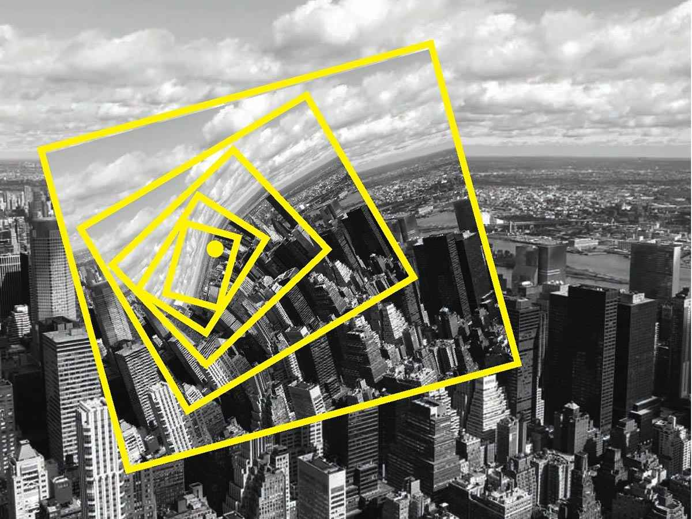
有趣的是，即便是在较小的图片出现褶皱时，这个定理依然是适用的。
僧侣与高山——1966年
僧侣沿着一条狭窄的山路攀登高山。他早上七点出发，晚上七点到达山顶。他会以不同的速度前进，并且要进行多次休息。第二天，他要在同一时间出发，并于同一时间到达山脚。在他两天的往返过程中，僧侣有没有可能在同一时间经过同一个地点呢？
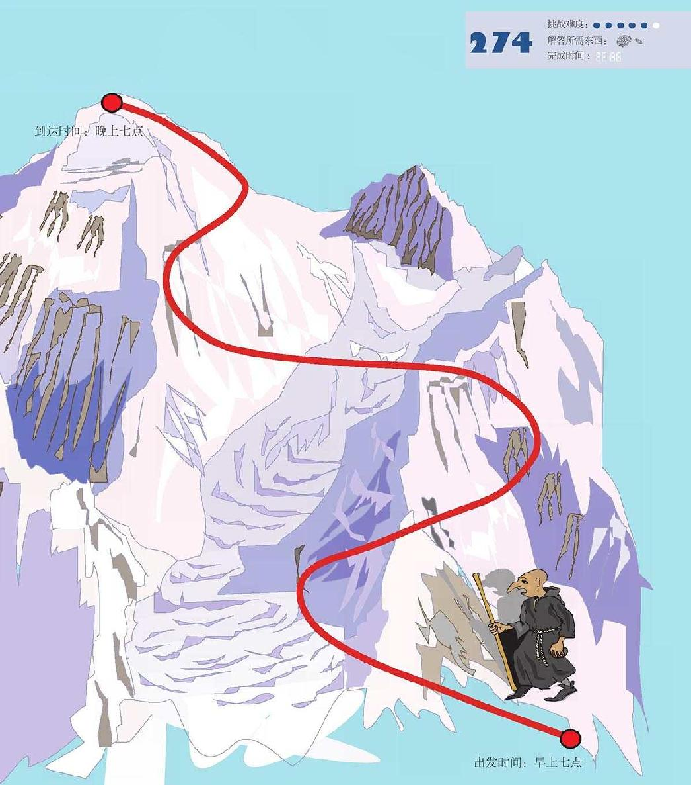
正方形拼凑——1974年
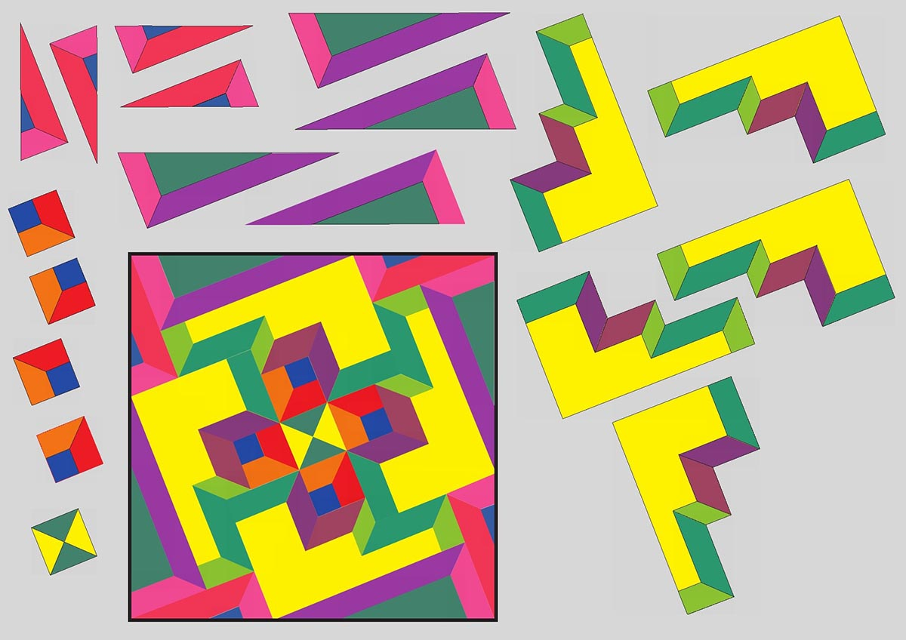
另一个起源于俄罗斯的具有挑战性的几何消失游戏出现在我的著作《绞尽脑汁的游戏》系列丛书里，由美泰公司于1967年推出。
18块着色后的形状刚好能够拼凑成一个正方形，如图所示。但是，在这18块形状当中，只需要17块同样能拼凑出一个正方形，因为其中一块较小的正方形是可以不使用的。这听上去是不可能做到的，但其实可以。你能解答这个问题，并解释背后的神秘之处吗？
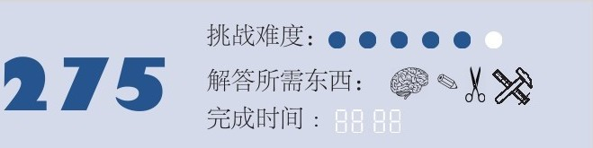
回旋陀螺玩具——1969年
回旋陀螺是一个神秘的物体，能够沿着一个方向不断旋转，然后以相反的方向旋转回来。回旋陀螺是考古学家们在研究史前石器时代的斧头时发现的。回旋陀螺之所以看起来很神秘，是因为人们认为某些东西既然沿着一个方向旋转，那它就会继续沿着这个方向旋转，直到某种外力的干预使其停下来。在物理学上，这被定义为角动量守恒。
回旋陀螺有着特殊的形状，能够只沿着一个方向不断旋转。当回旋陀螺沿着一个非首选方向旋转的时候，它的旋转速度就会渐渐地降下来，并且开始从一端晃到另一端。接着，回旋陀螺便会沿首选方向转动。简而言之，要是以错误的方式使其旋转起来，那么它就会停止之前的旋转方向，以相反的方向旋转起来。
原始的回旋陀螺是用木头做成的，并且上面有各种装饰的雕刻与图案。回旋陀螺现在通常都是以塑胶玩具的形式出现在市面上。
为了了解回旋陀螺的运转方式，我们就需要认真观察其形状。回旋陀螺的顶部是扁平的，并且有一个非对称的椭圆底部。椭圆体上的长轴与其扁平顶部的长轴做了特殊的校准设计，使得回旋陀螺具有优选的方向。换言之，两个长轴并不平行，因此回旋陀螺被设定为沿着某个方向旋转。
今天，回旋陀螺的多个衍生版本都可以在市面上看到，作为具有科学趣味的玩具而广受欢迎。一个较大版本的回旋陀螺大到足以让小孩子骑在上面，这是拉斯基科学技术博物馆在20世纪60年代末制造出来的一个展览品。
直到现在，有关回旋陀螺的种种奇怪表现，有许多不同的解释，不过，我们仍在等待一个更加符合物理法则的解释。在对这个玩具进行了长达100年的研究之后，尚未找到答案的科学家们不大可能就此停下研究的脚步。剑桥大学教授布莱恩·皮帕德说：“其实，科学家们真的很喜欢玩具，他们对任何看上去古怪的东西都充满了兴趣。除非他们找到了能够解释这些东西运转的原理，否则他们是不会感到高兴的。”
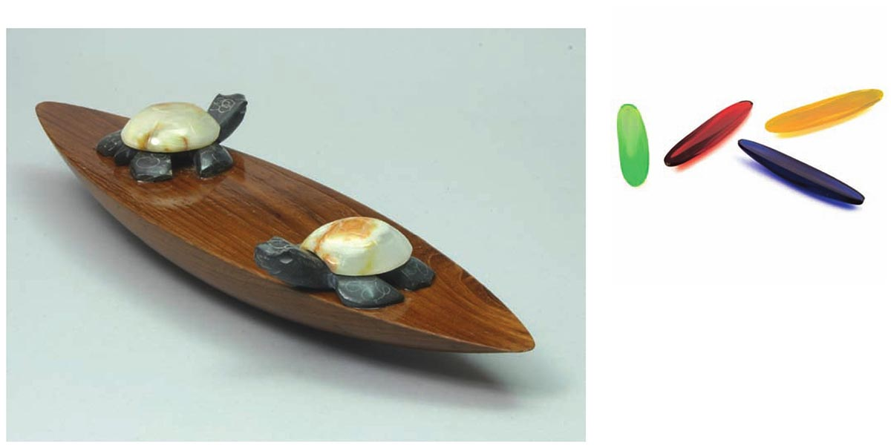
单向稳定多面体——1969年
所谓的单向稳定多面体就是一个n维度的物体，这样的立方体只能以一个面站立起来，并且其密度是均匀的。1969年，约翰·康威、理查德·盖伊与M.戈尔德贝格建构了一个单向稳定多面体，这是一个有17条边、19个面的棱柱，如图所示，它有着对称的横截面。这样建构的图形已经是一个记录了，因为少于19个面的这样的物体现在还没有被发现。
与不倒翁玩具一样，盖伊建构的棱柱一旦倾斜之后，就会往另一边自动地摆正。一些乌龟，比如印度星斑陆龟也有这样的单向稳定形状。平面上的任何凸多边形都不是单向稳定的。V.阿诺尔德通过缩减到四顶点定理证明了这一点。
不倒翁
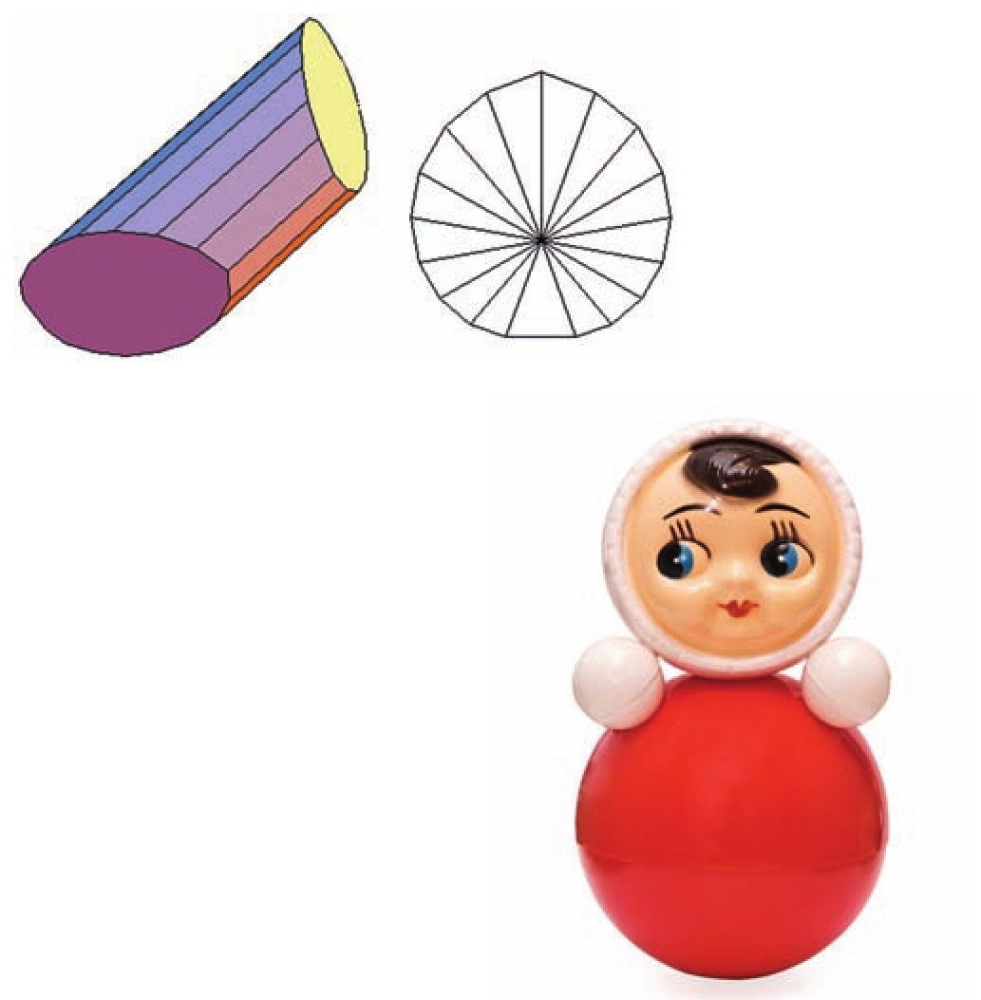
这个不倒翁玩具在被外力压倒时，会自动归正。不倒翁玩具有一个圆形底座，近似半球。它的重心就在这个半球的中心位置之下，因此任何使其倾斜的做法都会让这个不倒翁的重心恢复到之前的位置。推动不倒翁玩具时，它会左右摇晃一下子，然后回到直立。在这个平衡状态下，势能最小。
平衡状态
三个着色的珠子能够自动地沿着直立的管道移动。这些珠子的分布方式展现了三种不同的平衡状态：
顶部：稳定的。
中间：中立的。
底部：不稳定的。
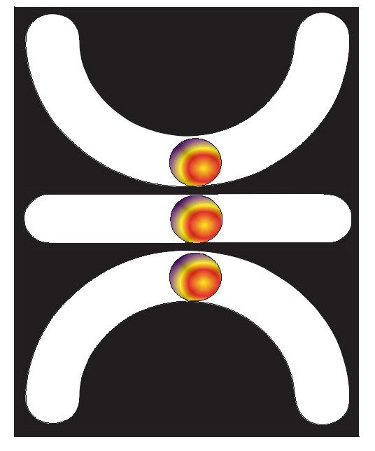
印度星斑陆龟
这只乌龟的形状使它的背翻过去之后能翻回来。来自布达佩斯科技与经济大学的数学家加博尔·多莫科什与来自普林斯顿大学的数学家彼得·瓦尔科尼设计了一个冈布茨（Gomboc）——只有一个不稳定平衡点和一个稳定平衡点的同质物体。正如重心位于底部（非同质的重量分布）的球体始终都会恢复到直立位置一样。他们注意到星斑陆龟也与之相似，通过对30只乌龟翻面进行实验，他们发现很多乌龟都能够自己翻正（详细内容参见第9章冈布茨的内容）。
非传递性的悖论——1970年
绝大多数关系都具有传递性，这种二元关系是这样阐述的：如果A大于B，而B大于C，那么A就肯定大于C。另一方面，某些关系可能就不具备这样的传递关系（如果A是B的父亲，而B是C的父亲，那么说A也是C的父亲，这绝对是不正确的）。
著名的石头剪刀布游戏就是一种非传递性的游戏。在这种游戏里，石头能够赢剪刀，剪刀能够赢布，而布又能赢石头。中国古代的哲学家们就将事物分为五种类型，形成了一个非传递性的循环：木生火，火生土，土生金，金生水，水生木。
在概率论里，有些关系看似具有传递性，其实并非如此。如果这种非传递性违反直觉，我们就会感到无比困惑。这样的关系就被称为非传递性的悖论或游戏。
很多天才都想创造出这样的悖论与游戏，这其实是很糟糕的做法。这种游戏最简单且最让人震惊的版本就是非传递性的骰子游戏，如图所示。这样的骰子是斯坦福大学的统计学家布拉德利·埃夫伦1970年首先设计的，之后经过马丁·加德纳在《科学美国人》专栏里的推广，广受欢迎。
非传递性的骰子游戏
如果你用骰子玩游戏，你会认为自己投掷出来的点数是随机的。这个游戏的目的就是找到这个游戏里四个骰子的特殊之处。
按照下面的方式去玩：
1.要求你的游戏伙伴从四个骰子里选一个骰子，然后你再从剩下的三个骰子里进行选择。
2.轮流投掷出一个骰子，掷出的数字越大的一方为获胜的一方。
该怎样选择骰子，才能让你取得最终的胜利呢？
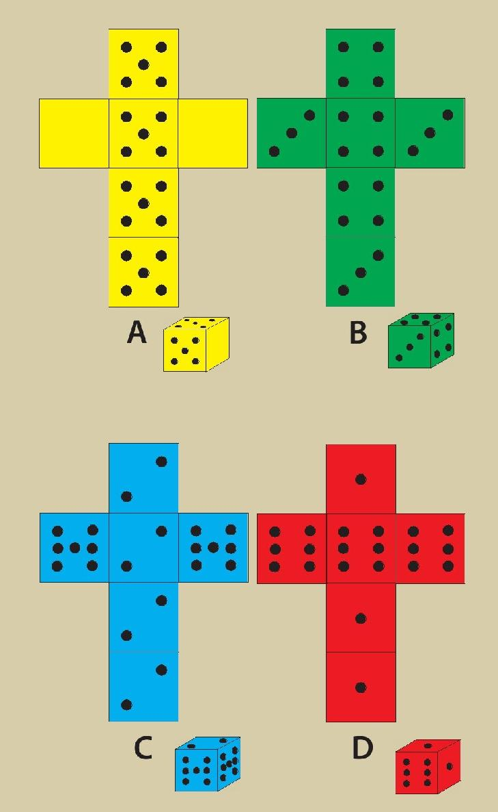
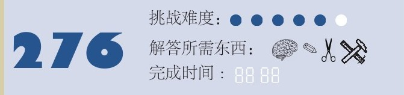
五角星形——1970年
基于黄金比例（参见第2章）而设计出来的一个具有美感的剖分游戏是由瑞士特里加姆的让·鲍尔发明的。它是由三个形状组成的：两个等腰黄金三角形，一个正五边形，如图所示。
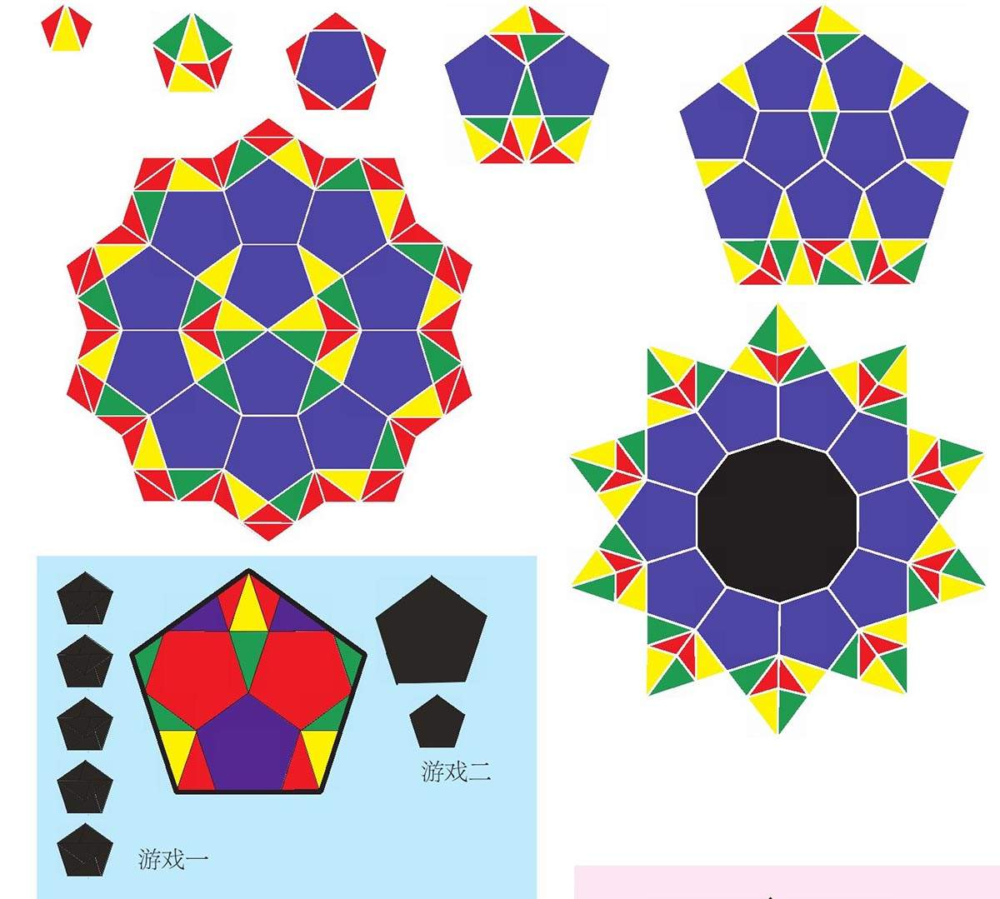
五角星形组成部分
在五角星形系列当中，最具挑战性的一个拼图游戏，就是拼砌一个大的剖分正五边形。这个正五边形由三组不同的形状构成（五边形与两种等腰三角形），共计17块。要求用这17块分别拼出游戏一和游戏二中的拼图。
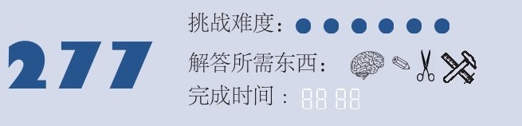
五边形与黄金三角形
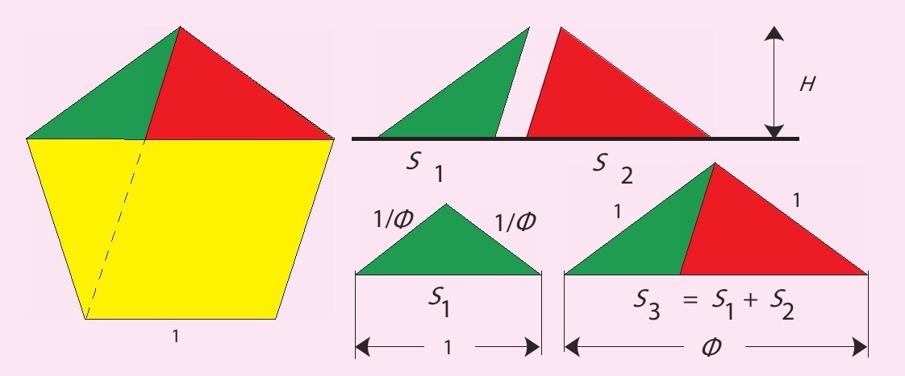
与所有的正多边形一样，五边形内部也存在着许多相互关系。每一边都与一个点相对，每一条对角线都在内部连接着两条边，这两条边构成黄金比例。
黄金比例的五角星形
五角星形是指有五个点的五角星形状，这是黄金分割原理的终极展现形式。这种图形也是毕达哥拉斯及其追随者的秘密符号，他们将这个秘密隐藏在黄金比例中，然后据此创造出黄金三角形。五角星形可以用23个三角形与五个五边形拼砌而成。
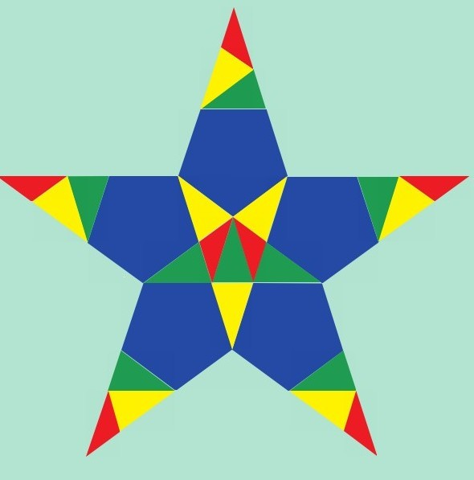
空心立方体——1970年
想象一下，你正在从不同的角度与方位去窥探一个空心的立方体。在这个立方体的底部，有一个8×8的正方网格形成的一幅图。每一次，你都只能看到这幅图的一部分。但若从六个不同的视角去看，就可找到足够多的信息在右边的空隙网格里重构整幅图。
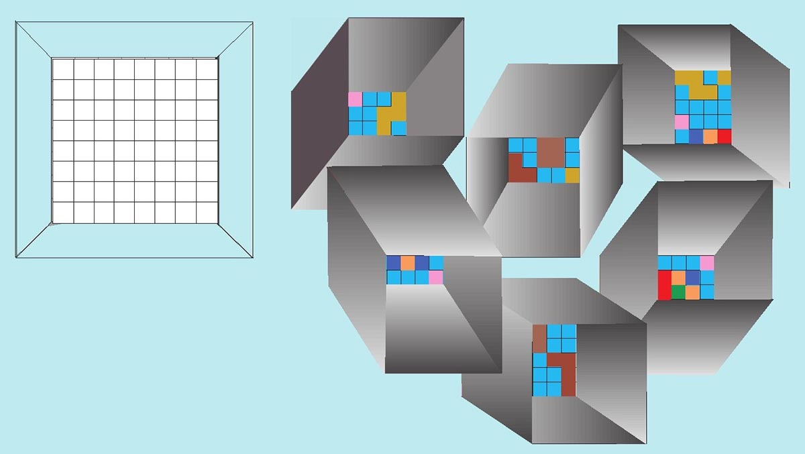
史洛夫贝尔-格拉特斯马拼装立方体游戏
你能将六个1×2×2的方块与三个1×1×1的立方体放入一个3×3×3的立方体里吗？
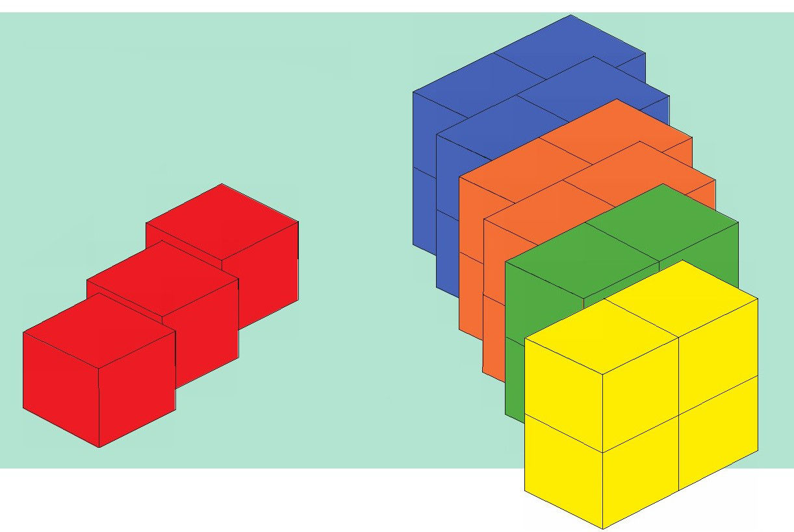
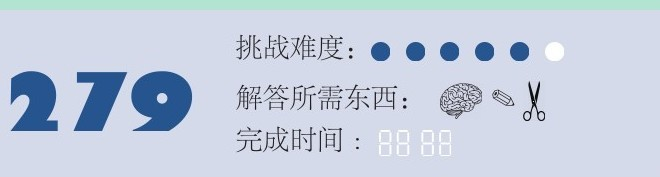
拼装立方体游戏
最早有关立方体拼装游戏的内容出现在1970年出版的一本书里，这本书的作者是詹·史洛夫贝尔（Jan Slothouber）与威廉·格拉特斯马（Williams Graatsma）。你可以用纸板制作出九个方块，但是要想解答这个看似容易的问题，其实并不是那么容易的。后来康威在这个游戏的基础上，创造了一些更难的游戏，如图所示。当这两个游戏的秘密被人们发现之后，解答它们就变得相当容易了。
康威的5×5×5拼装立方体游戏
与之前提到的3×3×3的立方体一样，游戏的目的就是将十三个1×2×4的方块、三个1×1×3的方块、一个1×2×2的方块以及一个2×2×2的立方体放入一个5×5×5的立方体里。
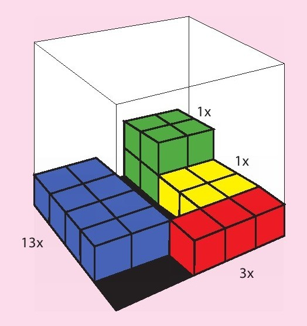
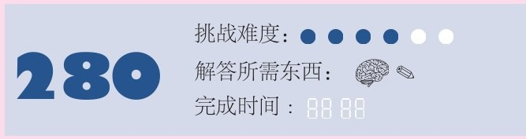
珠玑妙算——1970年
珠玑妙算这款棋盘游戏有着非常有趣的历史。它是以色列通信专家与发明家麦迪凯·梅罗维茨于1970年发明的。梅罗维茨在遭到多家著名的玩具公司拒绝之后，找到我帮忙设计他早期的纸板游戏原型。那时，我正在积极参与研发英国莱斯特Invicta Plastics公司的玩具，于是成功地将这款游戏纳入其中。在这个公司的罗尼·桑普森的帮助下，我参与了珠玑妙算这款游戏的最终设计工作。这款游戏在销售了5000万份之后，至今依然在市场上进行销售。这是20世纪70年代最成功的一款游戏。遗憾的是，梅罗维茨于1995年在巴黎逝世。
这款游戏的基本思想与最初被称为“公牛与母牛”的纸板游戏差不多，其历史可以追溯到一个世纪之前。这个游戏需要玩家破译密码，猜出那个设计密码的人所设定的密码。密码是从6种可选颜色的木钉中选择4种，按照一定顺序排列的。解密者需要进行一系列的模式猜想。在每次猜想之后，设计密码的人都会反馈两个数字，一个代表颜色正确位置也正确的木钉数量，一个代表颜色正确而位置错误的木钉数量。如果解密者在10次或少于10次的转动中就找到了正确的模式，那么他就赢了，否则就是设计密码的人赢了。
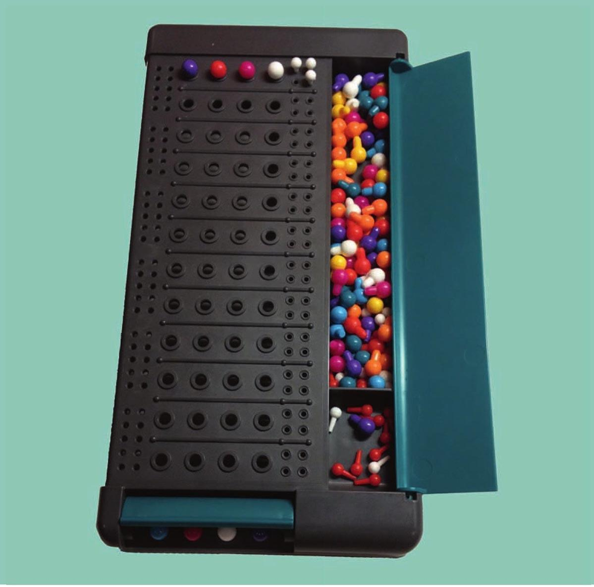
赫瓦塔尔艺术画廊定理——1973年
赫瓦塔尔艺术画廊定理是蒙特利尔大学年轻的数学家瓦茨拉夫・赫瓦塔尔对一个有趣的几何问题求解的结果。
1973年，维克多·科利向赫瓦塔尔提出了这样一个艺术画廊问题：对于一个n边形结构的艺术画廊，至少需要在里面安排多少警卫，才能让他们的视野覆盖这个多边形的每个角落？这样的多边形顶点数最少是多少？
如果一个多边形不存在自相交的情况，那么这个多边形就是简单的。更为准确地说，这样的多边形的边可能只会在它们的端点相交，并且一次绝对不会有两个以上的交点。
显然，如果这个多边形是凸多边形，那么它的整个内部从任何顶点都可以看到。一般来说，情况并非如此。对于每一个能够成形的n边形而言，至少需要多少个顶点呢？
赫瓦塔尔的解答方法在概念上是非常简单的，就是列举出一些特殊的例子。之后，鲍登学院的数学家史蒂夫·菲斯克找到了一个简单得多的证明方法。他从赫瓦塔尔的论文里知道了科利提出的问题，但却发现这个问题的证明并不能说服人。接着，他开始思考这个问题，最终在阿富汗的一次旅行途中，乘坐公交车打瞌睡时突然想到了解答的办法。
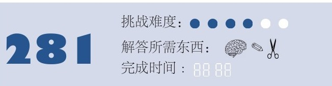
艺术画廊定理
这个看上去形状古怪的艺术画廊是由24面墙组成的，其中可以旋转的安保摄像机安置在某些角落里。如图所示，12个安保摄像机（红色的点）已经安装好了。
但是，安装与保养这些摄像机是非常昂贵的。要想让艺术画廊的每个区域都能被摄像机看到，最少需要多少台摄像机呢？另一个代价昂贵的方法就是重新进行设计，重新建造艺术画廊，那么一个旋转的安保摄像机就能完成这项工作，将这片区域的每个地方都覆盖到。
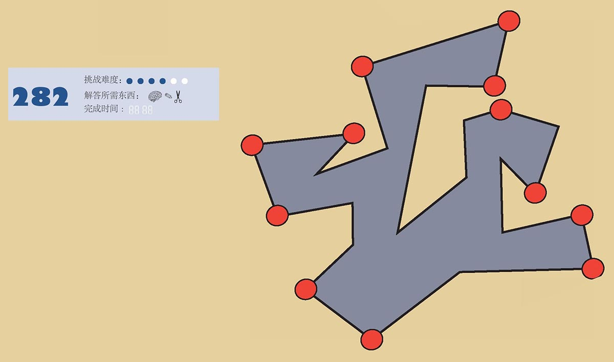
铁路迷宫——1974年
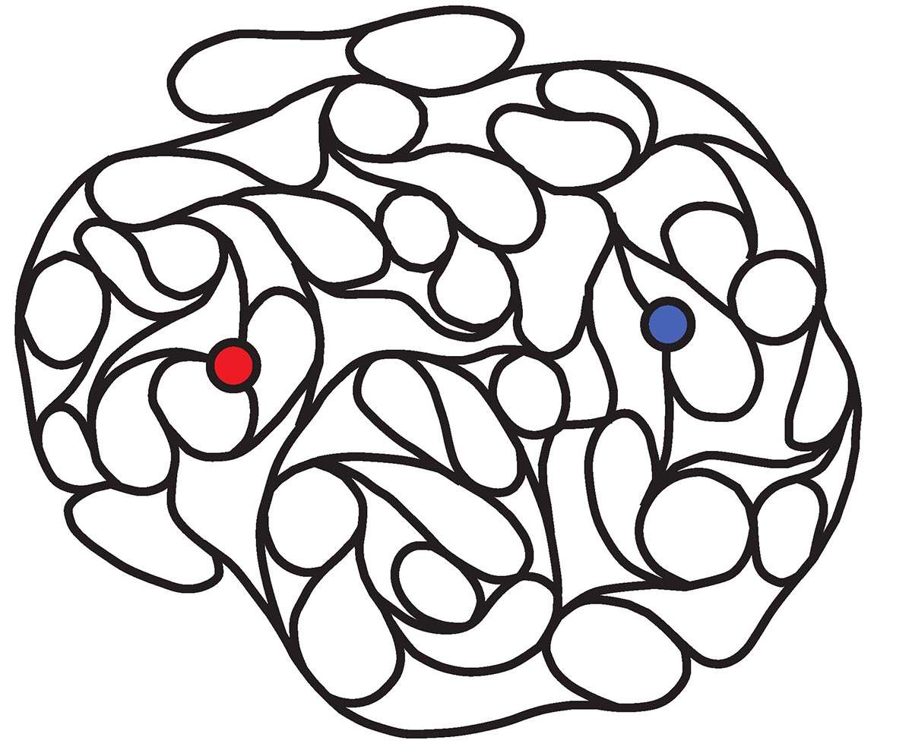
《谜题人生——马丁·加德纳一生追忆》一书的编者汤姆·罗杰斯、埃里克与马丁·德迈纳、罗杰·彭罗斯在这本书里描述了铁路迷宫游戏，这是一个古老、简单却充满智慧的纸笔游戏，这个游戏的基本概念就源于加德纳的父亲。
铁路迷宫游戏是圆滑曲线连成的网络，如图所示。即便是这么简单的铁路迷宫游戏，解答方法似乎也不是那么容易找到的。游戏的目标就是沿着给出的路径，从起点位置（红色的点）出发，最后到达终点（蓝色的点），整个过程中不能有任何折返的行为。
你可以将这个问题当成铁路迷宫问题去解决。很多路径最终都会让你回到出发点，其间甚至还会有“旋涡”这样的陷阱。一旦你进入之后，就再也无法走出去了。你能找到上图这个铁路迷宫的解答方法吗？
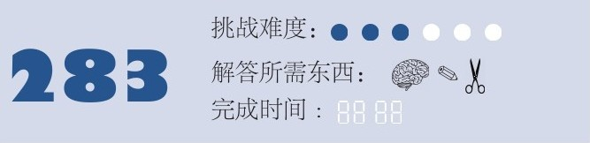
非周期性拼砌与彭罗斯拼图——1974年
正如我们早前所谈到的，所谓的周期性拼砌是指在一个区域内画出一部分轮廓，然后通过转换的方式对平面进行拼砌，就像我们在第4章所谈到的镶嵌那样。非周期性拼砌是非周期性的拼砌组合所形成的。这样的组合只允许非周期性拼砌。在很长一段时间里，专家们都认为，非周期性拼砌是不存在的。但在1964年，罗伯特·伯杰建构出了一个超过两万块拼砌部分的组合，之后将之减少到了104个部分。
各种各样的彭罗斯拼图就是非周期性拼砌最著名的情况。彭罗斯原型所具有的非周期性表明，彭罗斯拼图的变形复本是绝对无法与原始的组合相匹配的。
1974年，罗杰·彭罗斯爵士提出了三组拼砌方式，它们只能被用于非周期性的拼砌。他的第一个组合（P1）是由六个基于五边形的拼砌部分组成的，这受到了开普勒的影响。他的第三个组合（P3）则只使用了两种形状，这是一对菱形，如图所示。但是，最激动人心的是，他的第二个组合（P2）却只用了两种形状，就完成了非周期性的部分。约翰·霍尔顿·康威将这两种形状分别取名为“风筝”与“飞镖”，这样的图案能够创造出数不尽的美丽图案，这些都统称为彭罗斯宇宙（详细情况可以参看下一页的内容）。让人震惊的是，这样的模式之后在准晶体的原子排列中被发现。
彭罗斯P3拼图
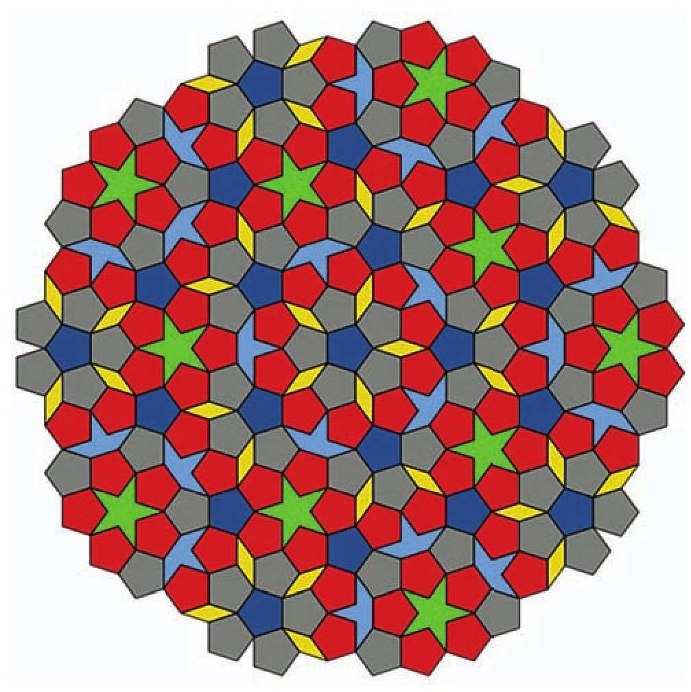
右图的彭罗斯拼图是只用两种形状拼成的，是一对菱形，一“胖”一“瘦”。
彭罗斯P1拼图
左图的彭罗斯拼图是利用一组四个形状拼成的：五边形、五角星形，还有被称为“船”与“钻石”的部分。
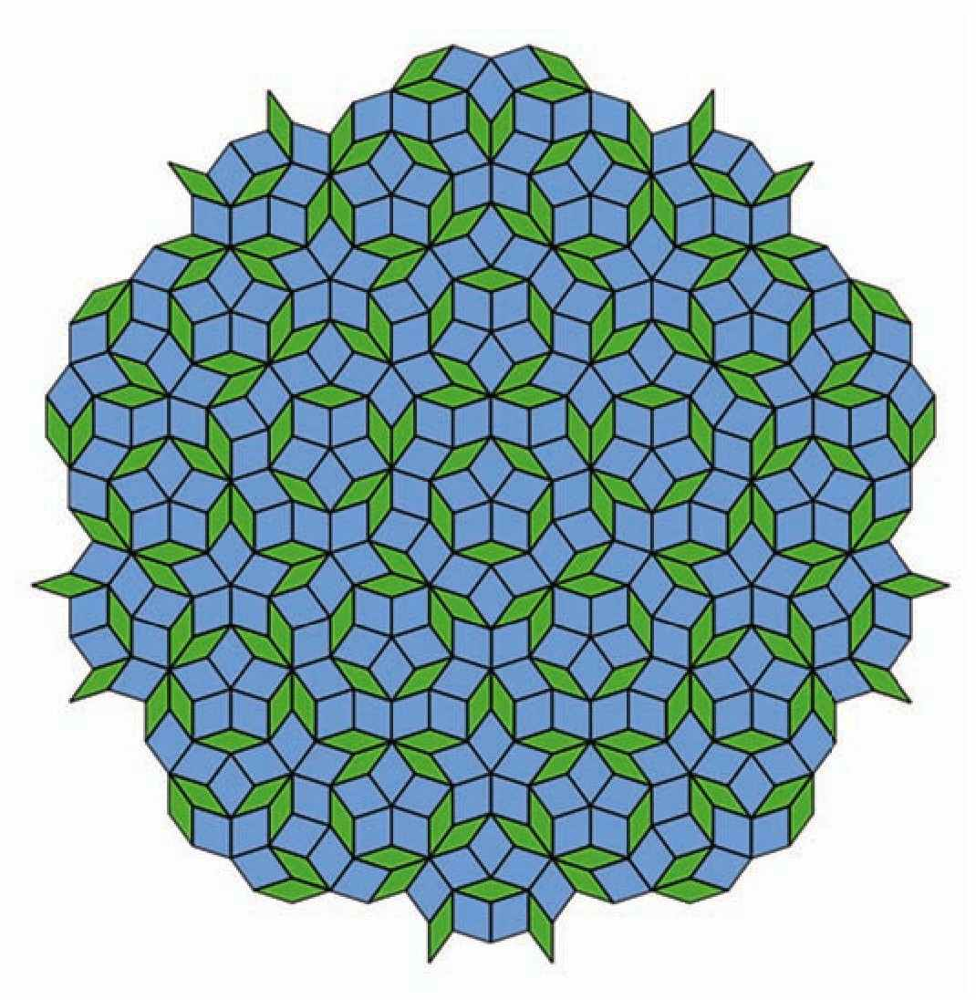
彭罗斯P2拼图：车轮
1974年，彭罗斯发现了一个只用两种形状组成的非周期性拼砌，并给这两个形状分别取名为“风筝”与“飞镖”。
彭罗斯的“风筝”与“飞镖”要如何在平面上进行拼砌，才能避免出现周期性的情况，而只形成非周期性的拼砌呢？
彭罗斯通过使用H与T两个符号对两个拼片的角进行标记，如图所示，解答了这个问题。要想做出非周期性拼砌，我们就需要将拼砌的部分排列好，从而让相同字母的角可以拼砌在一起。彭罗斯证明，这种非周期性的拼砌是基于这样一个事实，那就是两种形状的数量之比符合黄金比例1.618，它是一个无理数。这的确是非常有趣的。
我们给出的这个车轮模型就是最重要的彭罗斯拼图。中间区域的紫色部分是由一个“风筝”与“飞镖”组成的十边形。这种图形的外围部分是由两个部分组成的，也就是10个黄色扇形与10个蓝色的辐条。这些辐条由“蝴蝶结”元件构成，在倒转180°后依然能够镶嵌到邻近的扇形位置。
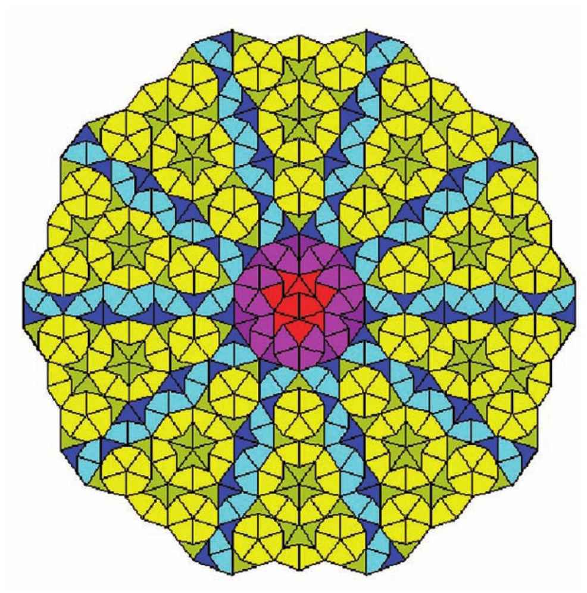
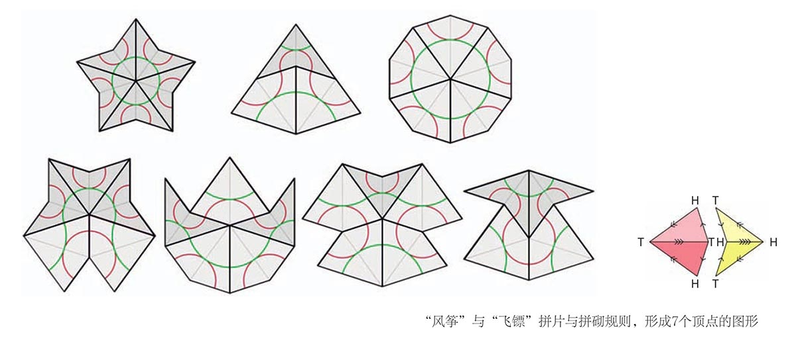
鲁比克魔方——1974年
1974年，匈牙利的建筑学教授艾尔诺·鲁比克发明了一种三维机械魔方，这种魔方就是现在众所周知的鲁比克魔方。在获得鲁比克的授权之后，1980年，这种魔方被理想玩具公司公开发售。
经典的鲁比克魔方六个面中每一个面都贴有九块贴纸，每一块贴纸的颜色都属于六种固定颜色中的一种。这个充满天才想象力的魔方每一个面都能独立地转动，使各种颜色混在一起。
玩这种魔方需要将每一个面恢复到原来的一种颜色。鲁比克魔方可能的组合数高达惊人的43252003274489856000种。
1979年9月，理想玩具公司获得授权，开始在世界范围内发售鲁比克魔方。1980年1月到2月间，这种魔方第一次在伦敦、巴黎、纽伦堡、纽约等地举办的玩具展览会上展出。

1970年，拉里·尼克尔斯发明了一种2×2×2的魔方，每一组中的每一小块都可以自由旋转。之后，尼克尔斯向加拿大专利局申请了专利。尼克尔斯的魔方是用磁石将各个部分组装在一起的。1972年，尼克尔斯魔方在美国获得了专利权，两年之后鲁比克魔方才发明出来。尼克尔斯将专利授权给了他的雇用方分子研究公司，1982年该公司对理想玩具公司提起诉讼。
我接受鲁比克教授、戴维·辛马斯特与汤姆·克雷默的邀请，在这场官司里出庭作证。1984年，理想玩具公司输掉了官司，之后又提起上诉。1986年，上诉法庭认为鲁比克的2×2×2口袋魔方侵犯了尼尔克斯的专利权，但是却推翻了之前对3×3×3的鲁比克魔方的判决。
鲁比克魔方在国际玩具展览会上展出之后，1983年（这是魔方游戏出现问题的一年），魔方销售暂时中断了，以便让生产符合西方的生产和制造标准。
很多玩具厂家趁着这个机会，制造了大量的仿造产品。2003年，一位名为帕纳约蒂斯·韦尔代什的希腊发明家创造出了从5×5×5直到11×11×11的魔方，并申请了专利。但是，这项世界纪录的持有者是奥斯卡·冯·德芬特，他在2012年制造出了一个17×17×17的魔方。
直到2009年1月，鲁比克魔方已经销售超过3.5亿个，成为史上最畅销的玩具。
不透明的栅栏——1978年
视线穿过一个已知的图形时，不透明的栅栏成为阻挡其通过的最小屏障。1978年，R.洪斯博格提出了“不透明正方形”或“不透明栅栏”的问题，马丁·加德纳与伊恩·斯图尔特对不透明的正多边形与不透明的立方体问题进行了归纳总结。
多短的栅栏才能够阻挡光线，使之无法穿过边长为1个单位的正方形呢？
这样的栅栏可以由任何一种形状、任意一条直线或曲线组成，也可以由一种以上的形状、直线或曲线组成。最明显的解答方法就是沿着正方形的周长建构一个栅栏，如图所示，那么这个栅栏的长度将会是4个单位，但更好的解答方法是只沿着三边去建造栅栏，将栅栏的长度缩减到3个单位长度。你认为栅栏的最短长度是多少？
埃尔代伊的斯皮德隆图形——1979年
丹尼尔·埃尔代伊是一名匈牙利工业设计师与艺术家，他创造出了极具数学美感的三维空间。
他发现了一种全新的几何形状，他将之称为“斯皮德隆”。斯皮德隆这种形状除了自身所具有的审美功能之外，还能广泛地运用到多个数学分支领域与艺术领域，比如平面几何、镶嵌、分形学、剖分学、多边形、多面体以及其他三维空间填充结构等。
斯皮德隆本质上是一个平面结构。斯皮德隆的主要特征在于，它拥有一种神奇的属性，能够折叠成一个复杂的三维空间形状。
如图所示，这只是一个较小的斯皮德隆结构折成的一个较小的万花筒式样板，它展现了斯皮德隆这种图形所具有的一些惊人属性。丹尼尔·埃尔代伊的合作者包括马克·佩尔蒂埃、阿米拉·比勒·艾伦、沃尔特·冯·巴勒古伊恩、克雷格·S.卡普兰、里纳斯·勒洛夫斯以及其他人。
联锁循环游戏——1979年
传统意义上的滑块或滑盘游戏都有一部分空间是未填满的，这种设计可以让其中的各个部分移动起来。掌握将这些滑块移动到空白区域的方法，通常是解答此类谜题的关键所在。
丘吉尔谜题，匈牙利环游戏或罗利-摩拉基游戏系列都融入了全新的特点，其中不预留任何多余的空间。各个沟槽中的每一个滑块都能够像链条那样移动，可以通过圆盘转移到各个沟槽的交点位置，从而让图形模式发生一定的改变。在沟槽内移动任何一个圆盘，就相当于在这个沟槽内移动其他所有的圆盘。
摩拉基
1893年，威廉·丘吉尔发明了一个游戏并申请了专利，这是一种全新的机械谜题。直到1982年，匈牙利工程师安德烈·帕普申请了专利，并且以“匈牙利环”命名这款游戏之后，他的这款游戏才进行商业化生产。
1979年，我发明了罗利系列游戏，并在1981年申请了专利，1982年，我将专利授权给了美富特新奇玩具公司。
直到1985年，我才知道丘吉尔早就已经申请了专利，因为在我申请专利的时候，看到丘吉尔的专利也列入了参考名单。
从历史的角度来看，罗利系列游戏专利，可以说是二维“联锁循环”游戏最早的子类别了。鲁比克的“弯扭游戏”系列显然是受到了鲁比克魔方的影响。到目前为止，一共有超过800种类似的游戏。
2011年，德国的卡斯兰德游戏公司的卡西米尔·兰多夫斯基发布了这款游戏，将之称为摩拉基游戏系列。
罗利-摩拉基游戏
罗利-摩拉基游戏系列由滑盘游戏组成，这些滑盘都是不存在多余空间的。在这个例子里，32个滑盘以一种链状的方式在椭圆形沟槽中移动，如图所示。每一条椭圆形沟槽含18个滑盘，其中有4个滑盘共用两条沟槽。
在一个沟槽上移动滑盘，将会让这个沟槽内的其他滑盘都沿着顺时针或逆时针方向转动起来。连续地改变沟槽将会让滑盘从一个沟槽转移到另一个沟槽。
这些滑盘的颜色如图所示。这些游戏的基本目目标就是用最少的移动，将中间的红色正方形变成蓝色的正方形。你可以按照想要的方式移动一步，改变沟槽内的图形，之后才能使另一个沟槽内发生移动。
罗利-摩拉基谜题
要想将最初的图形改变成另外两个图形中的一种，最少需要移动多少步？
1.变中间位置为蓝色正方形（黑色可以是任何颜色）。
2.让黄色的滑盘回到它们的初始位置。